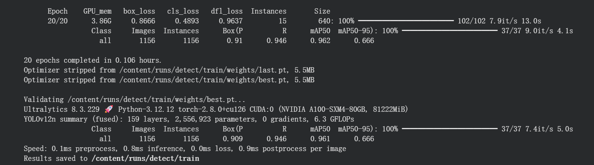
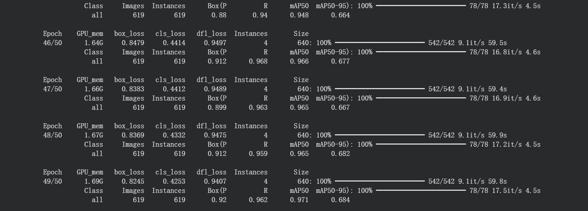

作業 05
用YOLOv12n訓練主動脈瓣物件偵測模型，讓我體驗到了訓練目標偵測的辛苦。訓練時看著 loss 和 mAP 慢慢進步，調整 batch size、learning rate 等參數，模型也越抓越準。中間有遇到 GPU 記憶體不足、NaN 等問題，但在查資料和不斷嘗試中，學會了怎麼 debug，也得到不少成就感。
| 總分 | 完成後打勾 | 配分 | 分項描述 |
|---|---|---|---|
| 4 | Simple baseline - 完成 baseline Colab 訓練得到訓練分數及訓練權重 | ||
| 4 | Medium baseline - 調整訓練筆數、Epochs 或其他參數得到比 Simple baseline 更高的分數 | ||
| 2 | Strong baseline - 使用不同版本、大小模型進行訓練並繳交 Colab | ||
| -10 | 沒有寫100字心得 |
| Simple Baseline mAP50 分數圖片  |
| Medium Baseline mAP50 分數圖片，調整 1~40 train、41~50 val，Epochs=50，batch=4  |
 20. YOLOv9e
20. YOLOv9e